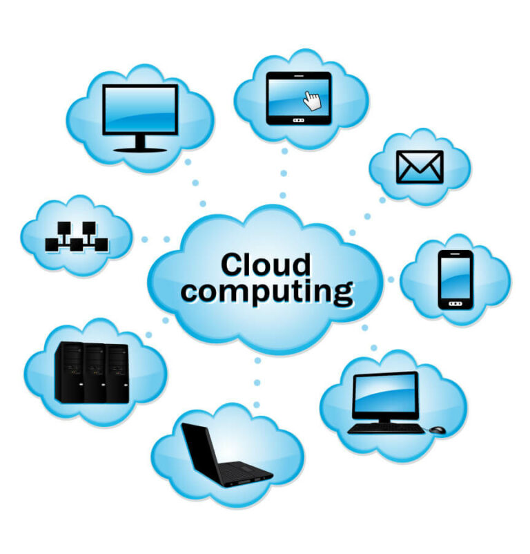
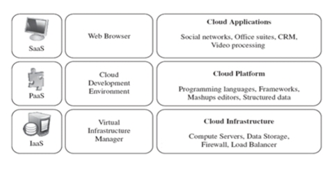

Basics And Technological Importance Of Cloud Computing
What Is Cloud Computing?
Cloud ek badi interconnected networks of servers ka desigen ha. jese ki computer resourses ko deliver
karne ke liye banaya gaya ha. or esme right location ka concept nhi ha ki data esme kha se aa raha h or
kaha ja raha ha.
colud computing ek esi technology h jesme data and program ko internet per store and
access keya jata ha.
in outher words,cloud computing ek technology ha jeseke dura data and information ko internetke help se
store and manage and retrieve kesaya jata ha.cloud computing me inter net per host ki gayi service
include ha.
agerbapni lanuguage me khaha jaye to cloud computing ek esa plate form h jaha duniya bhar ki infomation
aviable h par kaha store h ye kesi ko nhi pata h.or ye infomation kaha share ho rahi h ye bhi nhi pata
h. cloud computing me bahut sare resourseshote ha.data storage,server,networking,and application etc.
esme data cloud me he store hota h.or ye data digital data ke form me store hota h or ye data ko bade
computer me store kiya jata h.jese server kaha jata ha.
cloud computing ko develop karne ke liye harddisk,data base ,software application ka use kiya jata
h.cloud computing me service privateand public dono ho sakti h.ye serviceko three part me divite kiya
gaya h.1 iaaS 2 saaS 3 paaS.
example of cloud computing- google,amozon ,microsoftazure etc.

Type Of Cloud Computing
cloud computing ko 4 type hote ha.
- Public cloud
- Private cloud
- Hybrid cloud
- Community cloud
Advantange Of Cloud Computing
cloud computing me data ko store karna and uska backup karna aasan ha
seme infomationko share karna aasan hata ha.
user internet ke help se cloud me store imformation ko access kar sakta ha.
cloud computingme jo software and hardware ka use kiya jata h unko manage karna easy hota ha.
esme user moblie se data ko access ka rskta ha.
cloud computing me sabhi taraha ke data ko store kiya ja skta ha .
Disadvantage Of Cloud Computing
cloud computing me acha inter net conntion nhi h to hum data or file ko accessnhi kar sakte ha.
esme eski service ko ek user se usre usre tak transfer karne me oranization company ko problem ka samna
karna padta h.
Application Of Cloud Computing
1. Online Data Storage
cloud computing ka use cloud storage per file,image and video ko stora karene ke liye kiya jata ha.yaha
data and file ko cloudn Storage ka access provite karta ha.
eske alaba eska use organization ke dura badi matra me data ko store and access karne ke liye kiya jata
ha.
2. Backup and Recovery
eska use data ka backup lene ke liye kiya jata ha.esme search hue data ko dubra recover karne ke liye
baut se tootle hote ha. jo search hua data ko retrievekarte ha.
kisi search kiye hue data ko recoverkaena haed hota ha. leken cloudcomputing me esa nhi ha. esme data ko
recover karna easy hota ha.
3. Big Data Analysis
cloud computing ka use badi badi company ke dura store databko Analysis karne ke liye kiya jata ha. hum
sabhi jante ha ki badi matra me kisi data ko Analyze karna kitna muskil kam hata ha.leken cloud
computing ne es kam ko esay bana diya ha.
4. Testing And Development
eska use kisi application ko test and develop karne ke liye kiya jata ha.esme application ko develop
karna and use test karna bahuteasynha.
cloud computing me bahut sare tools hote ha .jenke dura kisi bhi application ko easy se develop and test
karna and test karna bahut he easy ha.
5. Antivirus
cloud computing ke ek type Antivirus software hota ha.jo business me mojud system per nigrani rakhta ha
or unhe virus se securenkarta ha.
jab cloud computing technology nhi thi to business ko apna computer per Antivirus software ko instoll
karna padta ha. leken ab esa nhi ha kyoki esme pahle se he Antivirus applicationhota ha.
6. E-Commmerce
cloud computing ka use e-commerce me kisi bhi product ke data ko online store karne ke liye kiya jata
ha.
online product buy and sell ka fayda yah bhi ha ki dellar and customer dono direct ek dusre se connet
kar pate ha. and customer ko khud shop me jane ki need nhi padti samne gar me pahuch jate ha.
computing model
cloud computing MODELS ko spi model bhi kahte ha.enme three layer hoti ha. sabse uper li layer
saaS,second layer me paaS and last layer me laaSnmodel hoti ha.

cloud copmuting me some model
Desktop computing
A desktop computer is a type of personal computer that is designed to be used on a desk or workstation.
It typically consists of a tower or case that houses the computer's components, including the
motherboard, processor, memory, and storage. A desktop computer usually has a separate keyboard, mouse,
and monitor, which can be connected to the computer using cables or wireless technology. Desktop
computers are often used for tasks that require a lot of processing power, such as video editing,
gaming, or running complex software programs.
client server computing
A client-server computer network is a system where one or more computers, called clients, request
services or resources from another computer, called the server. The server provides these services or
resources to the clients, which can be located in different geographic locations. This type of network
is commonly used in businesses and organizations where multiple users need access to centralized data
and applications. The server manages and controls access to the resources, while the clients are
responsible for requesting and using them.
cluster computing
A computer cluster is a group of connected computers that work together as a single system. The
computers in the cluster are typically connected by a high-speed network and share resources such as
storage, memory, and processing power. Clusters are used in a variety of applications, including
scientific research, data analysis, and high-performance computing. They are designed to provide high
availability, scalability, and fault tolerance, which means that if one computer in the cluster fails,
the others can continue to operate without interruption. Clusters can be configured in many different
ways, depending on the specific needs of the application.
grid computing
A grid computing system is a type of distributed computing system that enables sharing, selection, and
aggregation of geographically distributed resources, such as computing, storage, and data, to solve
complex problems. Grid computing systems are designed to provide access to computing resources that are
not available on a single computer. These resources are shared across a network of computers, which are
typically connected through the internet.
Grid computing systems are used in a variety of applications, including scientific research,
engineering, and financial modeling. They are designed to provide high availability, scalability, and
fault tolerance, which means that if one computer in the grid fails, the others can continue to operate
without interruption. Grid computing systems can be configured in many different ways, depending on the
specific needs of the application. They can also be used to create virtual organizations that share
resources and collaborate on common goals.
cloud computing architecture
loud computing architecture typically consists of several layers, each responsible for different aspects
of the cloud environment.
The layers include:
1. Infrastructure as a Service (IaaS): This layer provides the basic building blocks of the cloud, such
as storage, processing power, and networking. IaaS is often used to create virtual machines and networks
that can be customized to meet specific needs.
2. Platform as a Service (PaaS): This layer provides a platform for developers to build and deploy
applications. PaaS provides a set of tools and services that allow developers to focus on building their
applications without worrying about the underlying infrastructure.
3. Software as a Service (SaaS) This layer provides software applications that are delivered over the
internet. SaaS applications are typically accessed through a web browser or mobile app and are managed
by the provider.
4. Function as a Service (FaaS): This layer provides a serverless computing environment where developers
can deploy code without having to manage the underlying infrastructure. FaaS is often used for
event-driven applications that require quick response times.